AE 413 · Aircraft Stability and Control · Spring 2025 · ERAU
Role
Team Member — Stability Analysis & Simulation
AE 413: Aircraft Stability and Control · ERAU · Spring 2025
Tools
MATLAB · Simulink · USAF DATCOM · FlightGear
Multhopp’s Theory · Hand Calculations
Key Contributions
This project covered the full cycle of aircraft stability and control analysis — from geometry sizing and hand-derived stability derivatives all the way through closed-loop simulation and 3D flight visualization. The aircraft was a clean-sheet design, sized to fly at Mach 0.6 and 6,500 ft altitude at a trimmed angle of attack of 2°, carrying two passengers at a gross weight of 4,000 lb. The goal was to demonstrate that a designed configuration could simultaneously satisfy aerodynamic, geometric, and stability requirements, and then validate that behavior computationally.
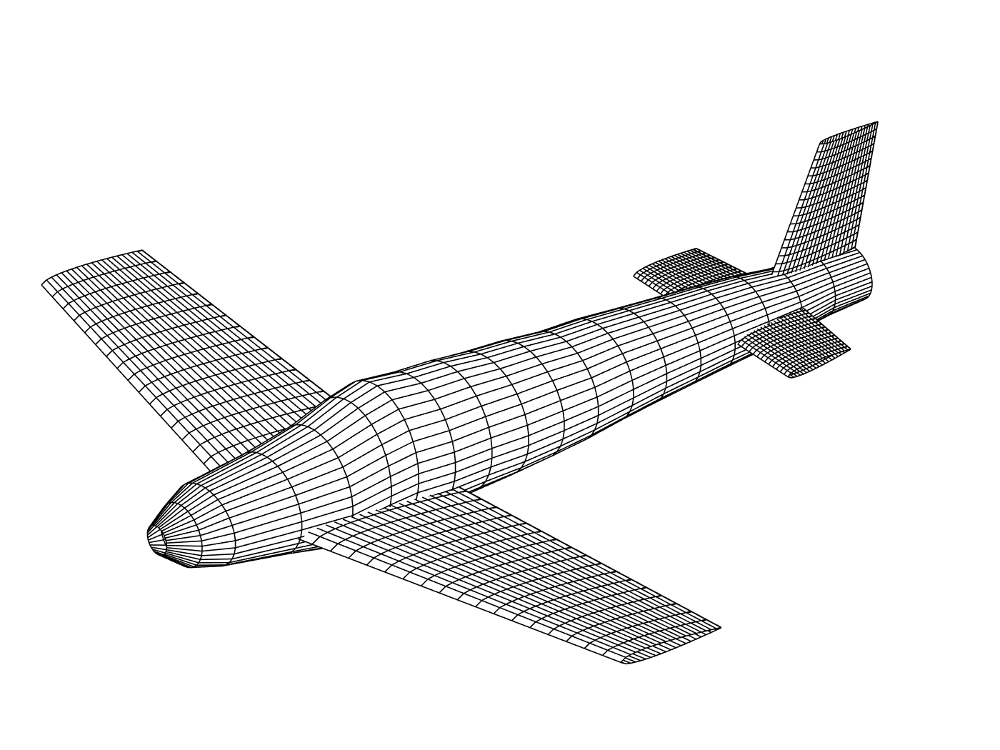
The aircraft configuration was established through manual geometric sizing. Wing parameters were selected to hit the required lift-curve slope and longitudinal stability margin, while tail sizing was driven by horizontal-tail volume coefficient constraints. The final design used an 11° leading-edge sweep and 3° dihedral on the main wing to balance lateral stability and aerodynamic efficiency.
| Parameter | Wing | Horizontal Tail |
|---|---|---|
| Root Chord | 6.5 ft | 3.0 ft |
| Tip Chord | 4.5 ft | 2.5 ft |
| Wingspan / Span | 22 ft | 8 ft |
| Wing Area | 121 ft² | 22 ft² |
| Mean Aerodynamic Chord | 5.561 ft | 2.758 ft |
| Aspect Ratio | 4.0 | 2.909 |
| Sweep Angle | 11° | 10° |
| Dihedral Angle | 3° | 8° |
| Taper Ratio | 0.692 | 0.833 |
Key flight-condition parameters and resulting aerodynamic coefficients at α = 2°:
| Parameter | Value |
|---|---|
| Altitude | 6,500 ft |
| Mach Number | 0.6 |
| Gross Weight | 4,000 lb |
| Fuselage Length | 27.708 ft |
| CL0 | 0.143 |
| CD0 | 0.017 |
| CLα | 4.648 rad−1 (0.0811 deg−1) |
| Cmα (DATCOM) | −0.293 rad−1 |
| Cnβ | 0.183 rad−1 |
| Stall Speed | 163.8 ft/s |
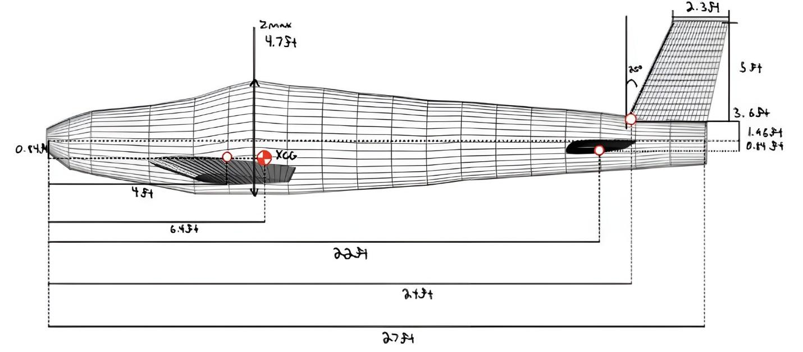
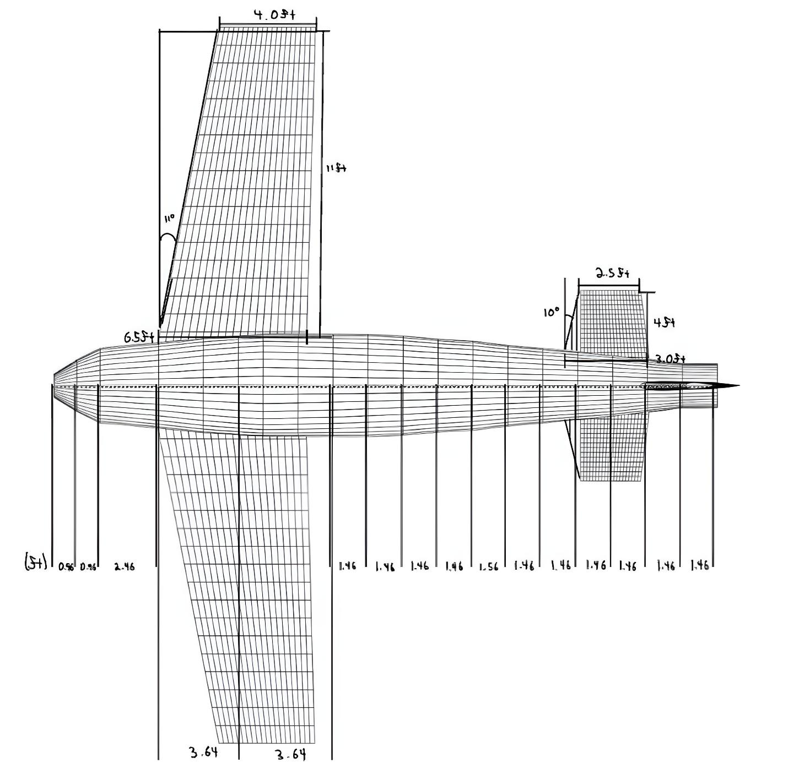
Longitudinal static stability was evaluated through the pitching-moment curve slope Cmα, which must be negative for a statically stable aircraft. The total Cmα is the sum of fuselage, wing, and horizontal-tail contributions. The fuselage contribution was computed using Multhopp’s theory (implemented as a MATLAB script), which integrates the pitching moment over 100 upwash and 100 downwash fuselage cross-sections, yielding Cmα,f = 0.4702 rad−1. Combined with the wing contribution (−0.297 rad−1) and tail contribution (−1.53 rad−1), the hand-calculated total is:
Cmα = 0.4702 − 0.297 − 1.53 ≈ −1.35 rad−1
DATCOM reported Cmα = −0.293 rad−1, a significant departure from the analytical result. This discrepancy is attributed to DATCOM’s semi-empirical assumptions, which can underestimate tail effectiveness for certain geometry configurations. Both values are negative, confirming the aircraft is statically stable in pitch, though the magnitude — and therefore the static margin — differs between the two methods. The neutral point was computed analytically at N0 = 0.435 (43.5% MAC).
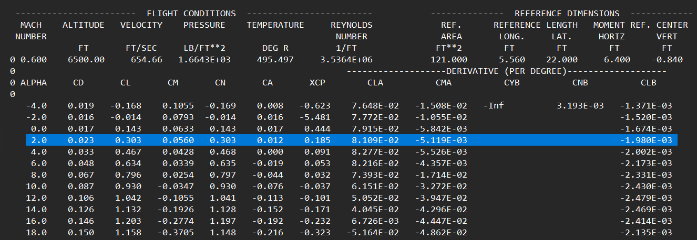
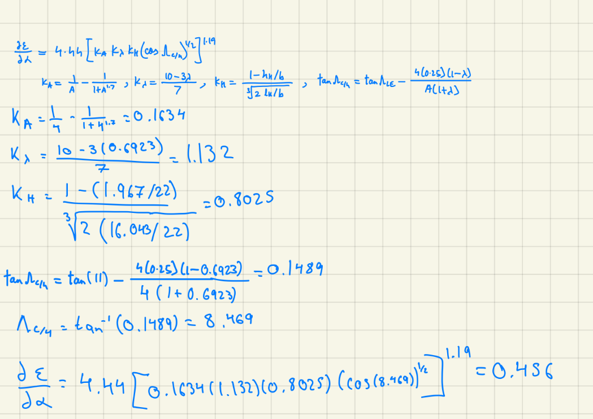
Directional stability is characterized by Cnβ (weathercock stability derivative) — a positive value indicates the aircraft yaws nose-into-the-wind when disturbed, which is the required stable behavior. Lateral stability is characterized by Clβ (dihedral effect) — a negative value means the aircraft rolls away from a sideslip, which is likewise stable. Both were computed analytically, incorporating contributions from the wing, fuselage, and vertical tail.
Directional stability (Cnβ):
Hand-calculated: 0.189 rad−1 DATCOM: 0.183 rad−1 Error: <3.5%
The close agreement confirms that the vertical tail is correctly sized for adequate yaw stiffness at this flight condition.
Lateral stability (Clβ):
Hand-calculated: −0.1231 rad−1 DATCOM: −0.113 rad−1 Difference: 0.01 rad−1
The 0.01 rad−1 difference between methods is well within acceptable engineering agreement, and both values confirm negative (stable) dihedral effect. The 3° wing dihedral combined with the wing sweep contributes the dominant stabilizing lateral moment.
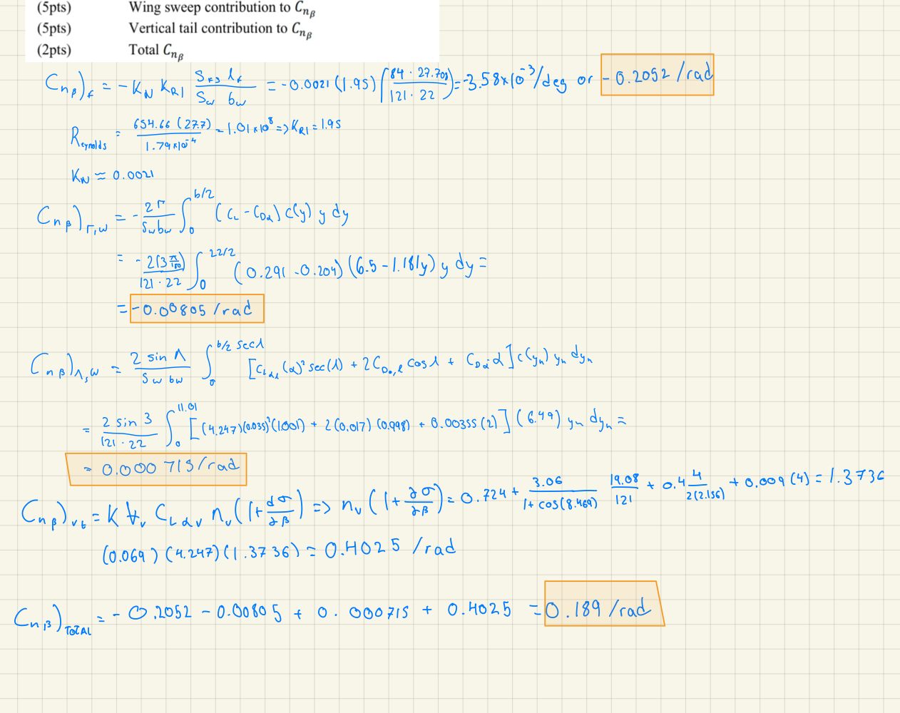
The table below summarizes the full derivative comparison at the design point (α = 2°, Mach 0.6, 6,500 ft). Good agreement was achieved for most aerodynamic coefficients. The significant discrepancy in Cmα underscores that DATCOM’s semi-empirical methods have known limitations for tail-effectiveness estimation on configurations where the horizontal tail is a strong contributor to longitudinal stability, warranting cross-verification with analytical methods.
| Parameter | Hand-Calculated | DATCOM |
|---|---|---|
| CLα | 0.0741 deg−1 | 0.08109 deg−1 |
| CL | 0.291 | 0.303 |
| CD | 0.024 | 0.023 |
| Vstall | 163.8 ft/s | 163.8 ft/s |
| dε/dα | 0.456 | 0.461 |
| Cmα | −1.35 rad−1 | −0.293 rad−1 |
| Cnβ | 0.189 rad−1 | 0.183 rad−1 |
| Clβ | −0.1231 rad−1 | −0.113 rad−1 |
| N0 (Neutral Point) | 0.435 (43.5% MAC) | N/A |
| Cmδe | −0.01385 deg−1 | N/A |
Five stability derivatives computed by DATCOM were integrated as 1-D lookup-table (T(u)) blocks in a Simulink 6-DOF general aviation flight dynamics model. Each lookup table maps angle of attack (in degrees) to its respective derivative value, evaluated at the design flight condition. This non-linear aerodynamic representation is more accurate than fixed-derivative linear models because it captures how the derivatives change across the angle-of-attack range from −4° to +18°.
| Derivative | Physical Meaning | Value at α = 2° |
|---|---|---|
| Cnr | Yaw damping due to yaw rate | −0.008426 |
| Cnp | Yaw moment due to roll rate | −0.0006962 |
| Cmq | Pitch damping due to pitch rate | −0.1992 |
| Clα | Lift-curve slope | 0.08109 |
| Cnb | Yaw moment due to sideslip | 0.003193 |
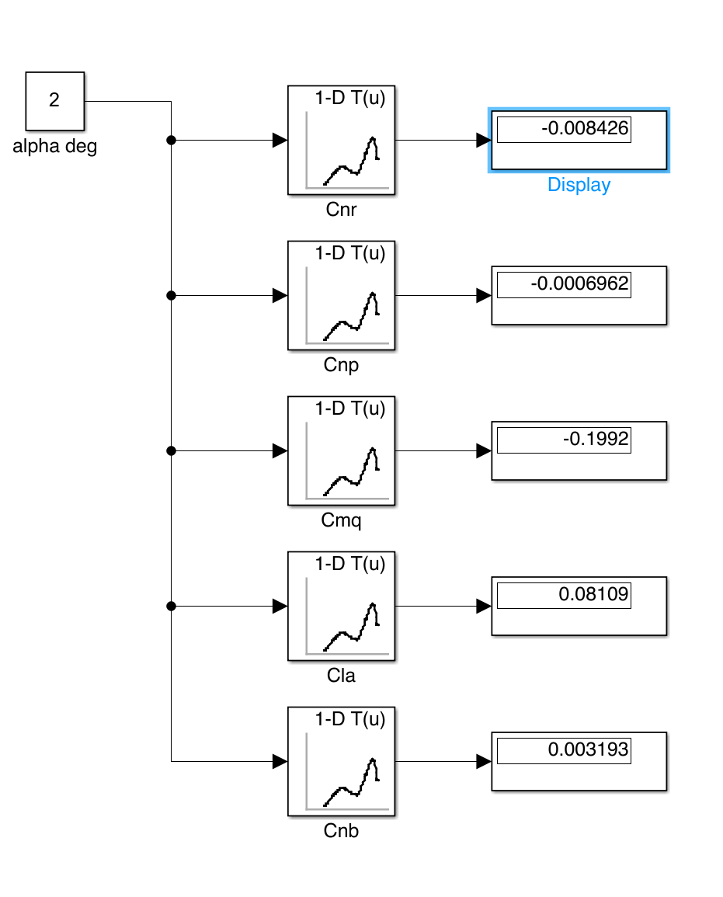
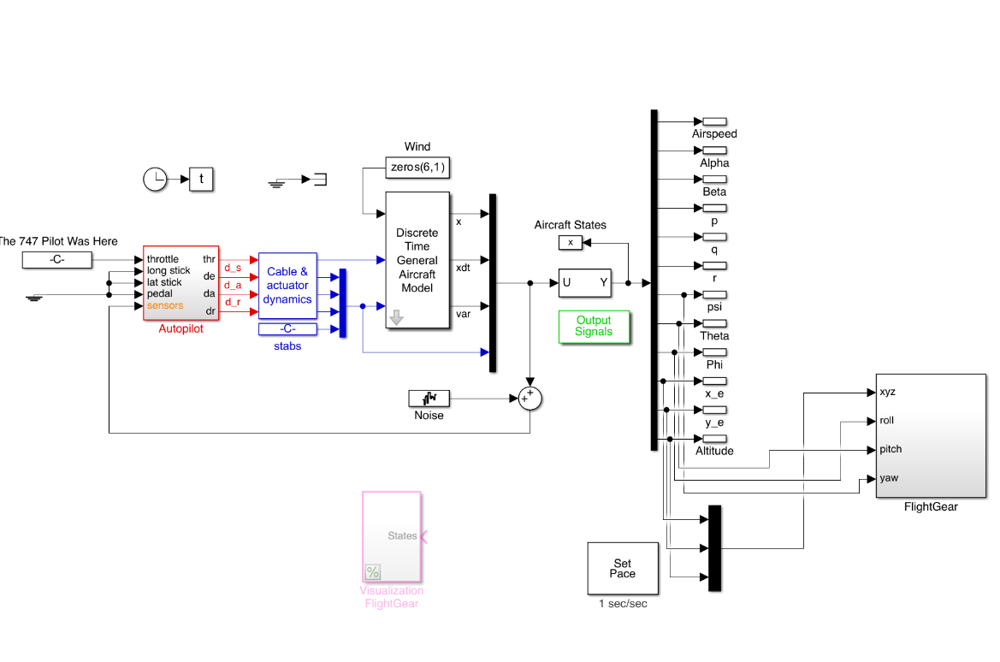
Three maneuvers were simulated in FlightGear to validate the aircraft’s dynamic behavior and control authority. In each case, Simulink passed state outputs (roll, pitch, yaw, altitude, airspeed) to FlightGear in real time, providing a 3D visual confirmation that the aerodynamic model produces physically plausible responses.
Level Flight (V = 654 ft/s, δe = −1.71°, all other surfaces neutral, Alt = 6,500 ft):
The −1.71° elevator deflection trims the aircraft at the design point. The negative sign indicates the elevator must be deflected trailing-edge-up (download on the tail) to maintain 2° angle of attack — consistent with a statically stable, aft-CG aircraft.
Pitch-Up (V = 630 ft/s, δe = +2°, Alt = 6,530 ft):
Increasing elevator to +2° produces a nose-up pitch response and a modest altitude gain of ~30 ft, confirming positive elevator effectiveness (negative Cmδe). The slight airspeed decrease to 630 ft/s is physically consistent with the pitch-altitude energy exchange.
Right Bank (V = 654 ft/s, all surfaces neutral, Alt = 6,500 ft):
The right-bank maneuver demonstrates the model’s lateral-directional dynamics. With neutral controls, any induced roll will couple through the dihedral effect (Clβ = −0.113 rad−1) and directional stability (Cnβ = 0.183 rad−1) to produce the characteristic spiral and Dutch-roll coupling inherent to the design.
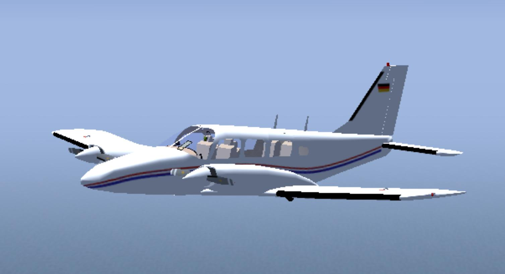
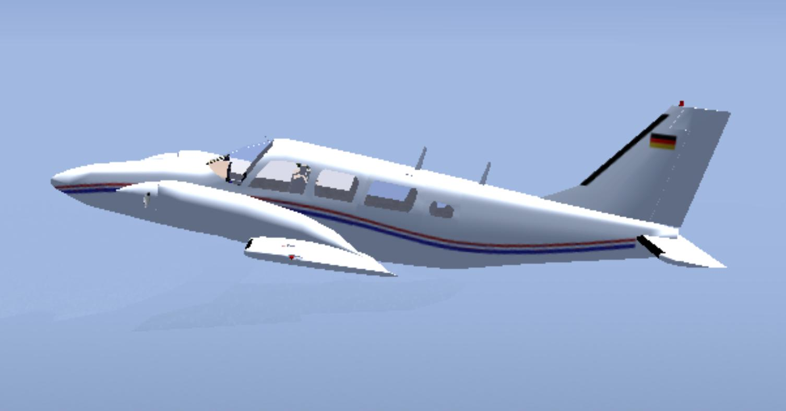
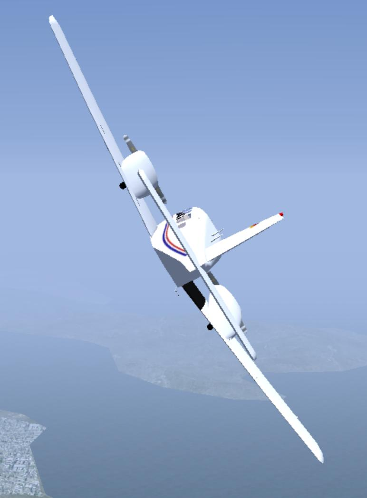
DATCOM is reliable for lateral-directional derivatives but can diverge on Cmα.
Cnβ and Clβ matched hand calculations within 3.5% and 0.01 rad−1 respectively, validating DATCOM’s lateral-directional accuracy for this geometry. The large discrepancy in Cmα (−1.35 vs. −0.293 rad−1) exposed a known DATCOM limitation for configurations where horizontal-tail downwash is a dominant longitudinal stability contributor.
Lookup-table aerodynamics captures non-linear behavior throughout the flight envelope.
Rather than linearizing the derivatives at a single operating point, the Simulink model uses DATCOM-sourced 1-D tables spanning α = −4° to +18°. This means the simulation remains valid through stall-approach regions, where derivative linearity breaks down and fixed-value models would give incorrect aerodynamic forces and moments.
A full design cycle forces tradeoffs between static stability and control power.
Placing the neutral point at 43.5% MAC gives a reasonable static margin when the CG is forward of that location, but the elevator Cmδe = −0.01385 deg−1 must be large enough to provide pitch-up authority throughout the flight envelope. The required trim deflection of −1.71° at level flight is modest, confirming adequate elevator sizing.
FlightGear simulation bridges the gap between equations and physical intuition.
Seeing the aircraft respond correctly in 3D — holding altitude at the trim elevator, gaining altitude on pitch-up, and rolling naturally in a bank — provides a qualitative sanity check that no numbers-only analysis can fully replace. It also builds engineering judgment about how derivative values manifest as observable flight behavior.